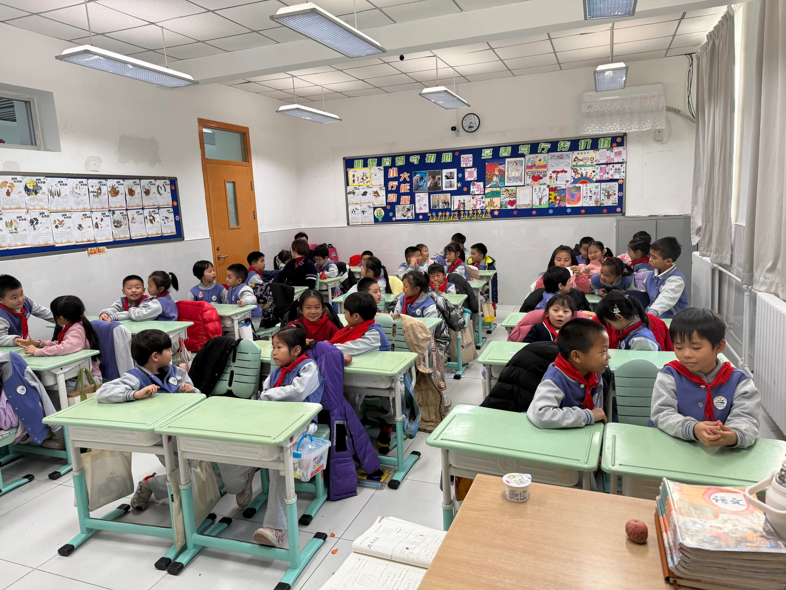
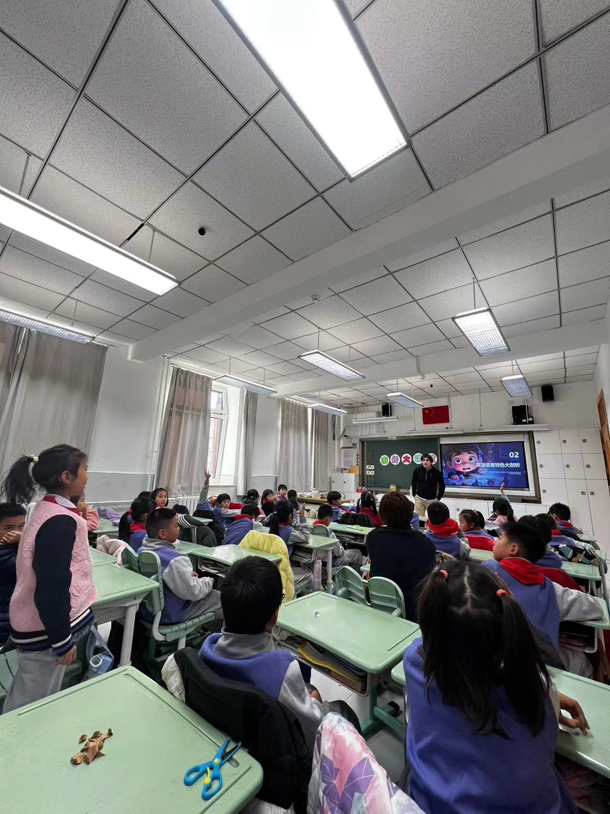
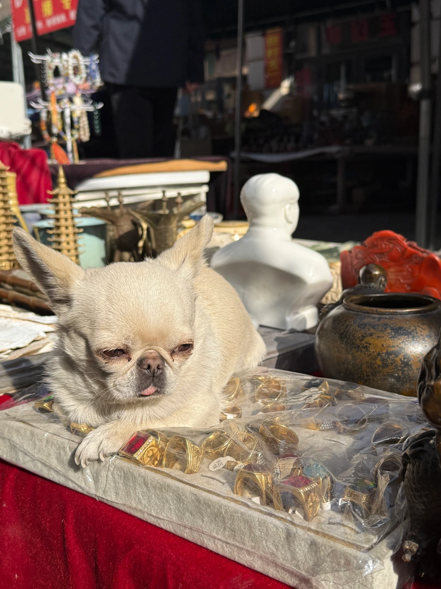

Happy Thanksgiving to all my American compatriots and prospective green card holders! I miss my friends and family dearly, and while I can't leave China for the next few months (that sounds bad; I'm not in prison, I'm just on a single-entry visa), I'll gladly host anyone who finds their way to Beijing.
On Monday, a friend of a friend asked me if I would give an English lesson to his daughter's elementary school class. I have absolutely no formal qualifications to teach English, which I told my friend's friend, but he assured me that the kids, aged 7-8, would simply be excited to see a Westerner.
Indeed, as I poked my head into the classroom, the thirty-plus xiao pengyoumen erupted. Foreigner! Foreigner! Foreigner!
they shrieked, bouncing with excitement.


I tried to control my laughter as the teacher worked to get everyone to settle down. One student finished an impressive presentation on toxic mushrooms, I overheard someone ask their table mate if I was from Japan, and then it was my turn to take the stage.
I've coached and competed in speech and debate for over 10 years, but standing in front of a classroom of boisterous xiao pengyoumen made me truly nervous and a bit bewildered. I quickly found out that while the students knew quite a few individual words, realistically, none of them could speak much English, so we ended up talking in Chinese.
We discussed different reasons to study a foreign language, some strategies to do so, and what they found difficult/easy about learning English so far.
Some highlights include:- When I asked the class to guess where I was from, answers ranged from England (most popular) to America, Russia, and Japan.
- When the teacher calls on a student, they stand up to speak, and after class, they get points for how many questions they answered.
- The teacher employed a lot of rhetorical questions. For instance, after the truly excellent mushroom presentation, the teacher asked,
do we think that was a 10?
and the class yelled out in unison,10!
(not factorial) - Every single time I messed up a tone, about half the class shouted the correct pronunciation, while the other half burst out laughing. When it comes to pronunciation, young kids have a much narrower, much less permissive band of understanding than adults, and sometimes, they just didn't understand what I was trying to say at all.
- The kiddos' motivation for studying English ranged from wanting to study abroad to simply being able to communicate with people from different parts of the world.
- One student who was half-Kazakh, half-Chinese spoke excellent Russian, and another student gave me a little flower made of clay after the class.
Overall, it was a fun experience, and I hope it was useful for the students, or at least entertaining. I tried to emphasize the importance of actually speaking the language we're trying to learn, since the Chinese education system generally prioritizes writing and reading above all else.
As a bit of a curveball, I ended the class by asking if the students thought reduced population growth in China would create a long-term inflation problem in the global economy, but their laconic replies suggested a lack of interest in the topic.
This past weekend, I also went to Tianjin, mostly to see Clayman Zhang statues, but I also ended up meeting a chihuahua/pug/maybe something else entirely named Ruyi. There's not much to say other than that I was very happy. My friend Dehlia said the dog looked like a bat, and a nearby man got very offended. He is NOT a bat. Ruyi is a dog!


In a nearby studio labeled Clayman Zhang
, cheap-looking action figures lined the shelves, including Rubenesque cats and mythological figures like Zhong Kui, a brilliant and highly educated jinshi who got the highest score on that year's Civil Service Exam. When it was time to be presented to the emperor for appointment, the emperor rejected him because of his ugliness,
and Zhong Kui killed himself in indignation. When he reached hell, Zhong Kui's talent and righteousness were eventually recognized, and he became the king of ghosts and a demon-quelling spirit.


It was pretty obvious that this was a knock-off store operating under the Clayman Zhang name. In fact, there were several identical stores in the vicinity. As Ian Johnson documents in his book, The Souls of China, after the Cultural Revolution, the government opened its own for-profit studios that used the Zhang family's name, but most of their products are made in factories outside of Tianjin.


Eventually, we found a store representing the original brand, which emerged as a popular folk art in Tianjin in 1843, when a trader named Zhang Mingshan began making little clay figurines for his friends and family (the four pictures I've included here are all from the original store).
Zhang's popularity began to grow, and soon, even the Empress Dowager Cixi commissioned his work. After the collapse of the Qing Dynasty in 1911, Clayman Zhang's reputation remained, and leaders from Chiang Kai-Shek to Mao Zedong to Zhou Enlai all owned a Clayman Zhang statue.
In recent years, the government has labeled the works a part of China's intangible cultural heritage, but in some ways, this form of valorization paralyzes creative practices. Before, successive generations of folk artists evolved their craft over time, but now, a sea of commodified, cheapened simulacra freeze the idea of what Clayman Zhang is. Artists lose the space to push the boundaries of their expression and the agency to try new ideas.

We spent the rest of the day walking around Tianjin, looking at art, hanging out with old men swimming in the river, learning how to play the 6-holed flute, and chatting with match-making aunties at the people's park.
Thanks for reading, and until next time,
Michael